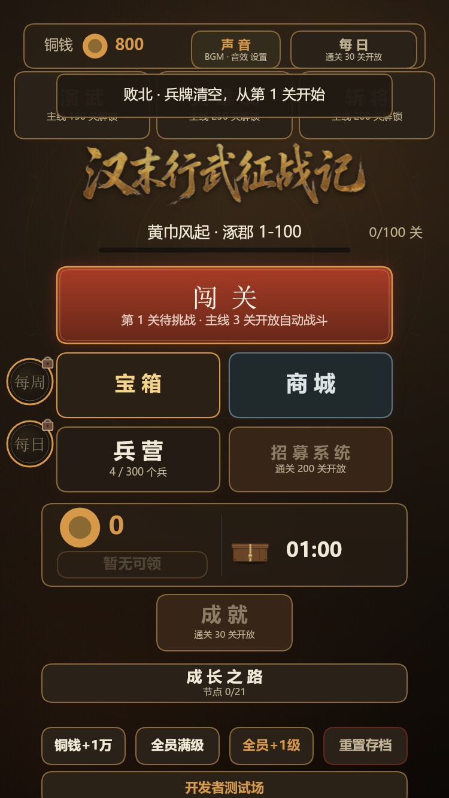
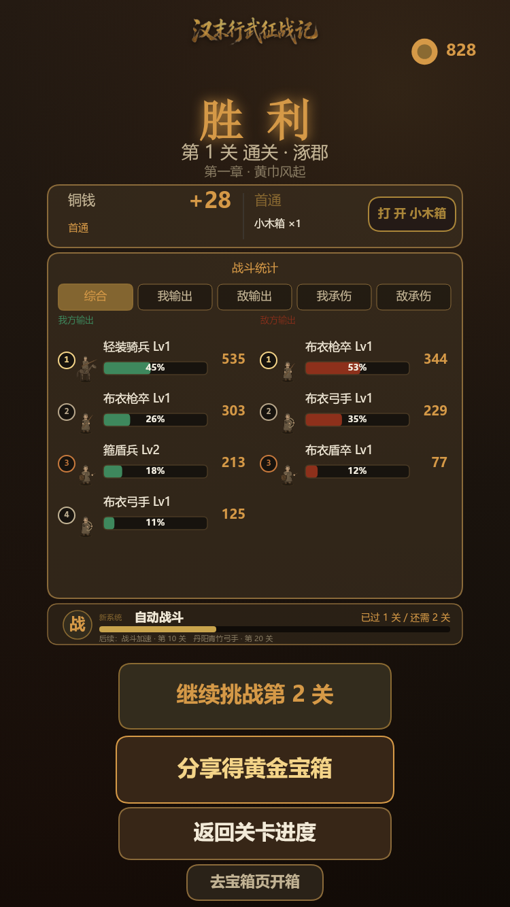
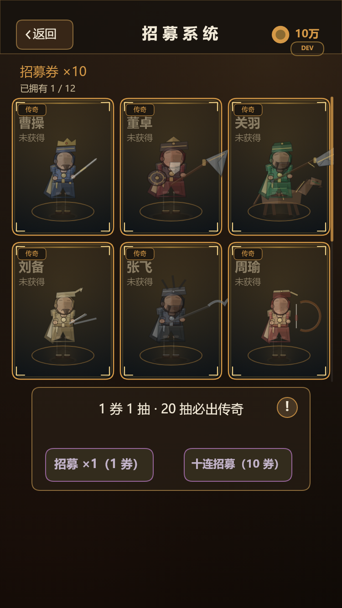
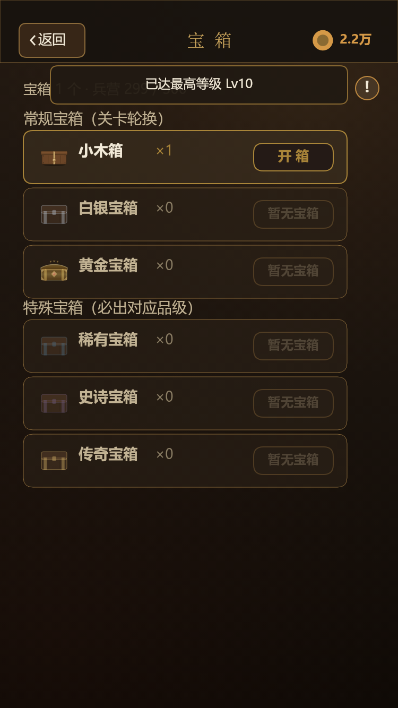
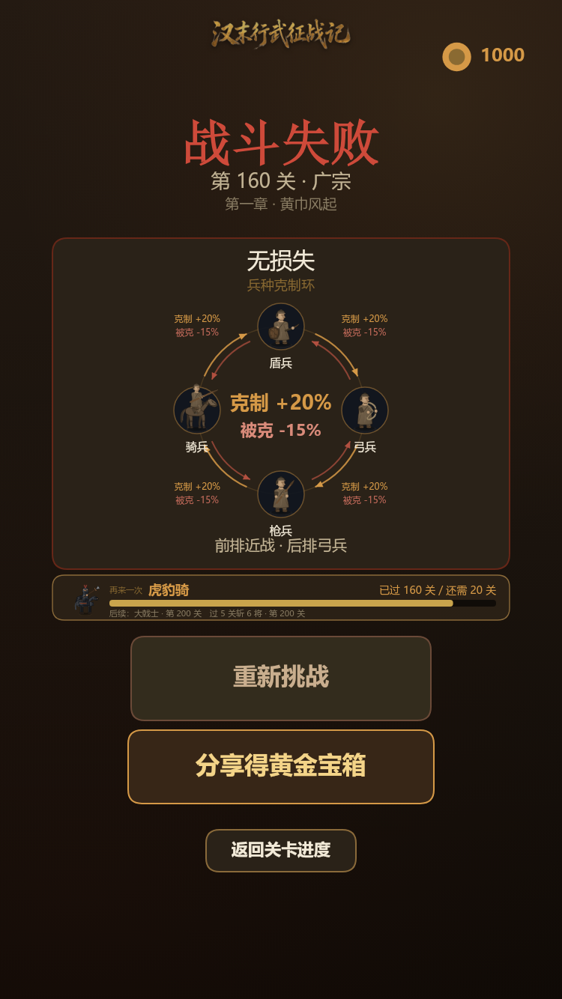

THEME v2 令牌表 · 验收单
01 · 本步边界
S2.1 只做「设计系统令牌层 + 全局色调回退」：撤销上一轮冷玄墨「墨韵丹符」，按 12 张参考图程序化取色重建 v2 色板，并把 UI 层所有冷色硬编码精准回退。保留全部历史 key 与语义别名，280 处 THEME.* 引用零改动。
02 · THEME v2 令牌表
结构色沿用与实测吻合的原始暖褐层次；强调色直接采用 12 张图 48 色量化后的高频实测值。所有值集中在 src/render/draw.js 的 THEME，仍是单一换肤源。
| 类别 | Key | 色值 | 依据 / 用途 | 对比度（对 panel） |
|---|---|---|---|---|
| 结构色 | bg0 | #17130E | 最深底，实测近 #15120D | 15.44:1（text） |
bg1 | #211A12 | 次级底 | — | |
panel | #2A2218 | 实测 3.22%，占比第一，主面板 | 基准 | |
panel2 | #372617 | 实测 2.00%，亮面板 / 按钮底 | — | |
panel3 | #4A3A24 | 高亮层 | — | |
line | #8A6A3A | 鎏金描边（由实测 #AA8B58 收暗） | — | |
lineSoft | #5A4528 | 暗金细线 | — | |
| 鎏金 | gold | #D59947 | 实测主金；胜利 / 货币 / 主描边 | 6.32:1 AA✓ |
goldDim | #8A6A32 | 暗金边 | 3.12:1 大字✓ | |
goldLit | #F4D488 | 亮金文字 | 10.91:1 AA✓ | |
| 朱砂 | red | #8D301B | 实测深朱红；主按钮 / 印章（作填充，不作正文） | 1.92:1（仅填充） |
redDim | #662718 | 暗阶 | — | |
redLit / blood | #CE4A3A | 参考图 13 标题实测中位色；战败大字 | 4.3:1 大字✓ | |
| 品级 / 状态 | purple | #96659A | 实测紫；史诗 | 3.45:1 大字✓ |
green | #3E885D | 实测青绿；正向 / 血条 | 3.64:1 大字✓ | |
blue | #5B7C99 | 稀有 | — | |
| 文字 | text | #F2EAD8 | 暖白正文 | 13.08:1 AA✓ |
textDim | #C2B394 | 次级 | 7.59:1 AA✓ | |
textWeak | #8A7D64 | 弱信息 / 禁用 | 3.88:1 大字✓ |
victory→gold、blood→redLit、defeat→#6B4A38 暖褐灰、shop→gold（商城标题回归鎏金）、treasure→#C9A45C 金木色。这样 S2.1 无需改动 30+ 界面的引用点，也不会留下冷玄铁/青蚨/紫气的功能色残留。另新增 goldSoft / brown / inkDeep / haloGold / haloRed 供 S2.2 纹样与光效使用。03 · 实际改动清单
| 文件 | 改动 |
|---|---|
src/render/draw.js | THEME v2 全量重写；主按钮渐变压暗；infoBadge 冷灰圆 → 深褐底 + 金边；组件内 24 处冷色回退 |
src/game.js | 全局画布背景：冷青灰 → 深褐渐变 + 局部暖金/朱砂氛围光（强度按参考图收敛过一轮） |
src/data/config.js | rarity 五档品级色统一到 v2 实测色板 |
src/render/heroArt.js | HERO_AURA 史诗紫 / 传奇金 → 实测色；光环渐变 8 处 RGB 同步 |
src/render/unitCard.js | 兵牌底、未解锁态、空位态 15 处冷蓝灰 → 深褐（参考图 06 / 11 是深褐近黑） |
src/screens/home.js | 四个入口按钮高饱和实底 → 深褐 / 深墨青灰实底 + 细描边 + 亮色文字 |
src/screens/result.js | 微信绿「分享得宝箱」→ 深褐底 + 鎏金描边 + 金字（对齐参考图 13） |
src/screens/*.js 其余 28 个 | 由回退脚本批量处理 UI 层冷色硬编码，共 321 处；兵种 / 战场 / 精灵美术文件排除不动 |
tools/recolor-theme-v2.mjs 新增 | 幂等可复跑的回退脚本（二次运行 0 处），含 HEX / RGBA / 注释三类映射 |
tools/measure_palette.py 新增 | 三栏冷暖像素量化验收工具，后续板块 3 每批可复用同一把尺子 |
tools/smoke.mjs | 兵牌底色采样常量同步为 [36,26,22] |
tools/verify-wx-pack.mjs / build-wx.mjs | 修复沙箱拦截删除导致的校验崩溃与产物污染（详见 05） |
specialSprites.js 等兵种/器械美术色、arenaField.js 战场色、config.js 里「霜雪洛阳」章节的雪地冷灰（属场景美术，不是 UI 主题色）。板块 1 的分包链路（subpackage.js / asset-routes.js / 音频双轨升级）完全未动。04 · 三栏量化对比（程序化，非肉眼）
方法：每张图缩放后量化为 48 色，统计「暖像素」（R>B+12 且 R>G+4）与「冷像素」（B>R+12）占比。数据由 tools/measure_palette.py s2.1 生成，存于 s2.1/color-metrics.json。
| 界面 | 参考图 暖/冷 | 改前（冷玄墨）暖/冷 | S2.1 暖/冷 | 与参考图差 | 判定 |
|---|---|---|---|---|---|
| 01 首页 | 46.0 / 0.0 | 15.2 / 14.3 | 51.7 / 0.3 | +5.7 | ✓ |
| 02 关卡 | 51.7 / 0.0 | 3.5 / 10.4 | 49.1 / 0.0 | −2.6 | ✓ |
| 03 商城 | 60.4 / 0.0 | 5.0 / 8.2 | 44.6 / 0.0 | −15.8 | ✓ |
| 04 战斗 | 92.5 / 0.1 | 74.7 / 0.9 | 82.7 / 0.4 | −9.8 | ✓ |
| 05 结算 | 60.6 / 0.1 | 4.8 / 43.7 | 60.5 / 0.2 | −0.1 | ✓ 几乎重合 |
| 06 布阵 | 72.2 / 0.9 | 45.8 / 4.5 | 58.7 / 0.0 | −13.5 | ✓ |
| 07 每周挑战 | 48.7 / 0.0 | 1.7 / 11.7 | 21.3 / 0.0 | −27.4 | △ 待板块 3 |
| 08 每日挑战 | 57.9 / 0.0 | 2.2 / 7.5 | 21.5 / 0.0 | −36.4 | △ 待板块 3 |
| 09 招募 | 70.7 / 0.1 | 8.0 / 5.3 | 42.9 / 0.1 | −27.8 | △ 待板块 3/4 |
| 10 宝箱 | 60.4 / 0.0 | 2.7 / 4.4 | 21.6 / 0.0 | −38.8 | △ 待板块 3 |
| 11 兵营 | 42.9 / 1.9 | 3.4 / 12.4 | 22.0 / 0.8 | −20.9 | △ 待板块 3 |
| 13 战败结算 | 44.5 / 0.0 | 4.4 / 10.1 | 48.6 / 0.0 | +4.1 | ✓ |
05 · 三次打回修改记录
打回 ① · 首页四入口变成高饱和纯色块
回退后首页宝箱/商城/兵营/招募变成亮橙、亮绿、淡紫实底，与参考图 01「深褐近黑底 + 细描边 + 亮字」完全不符。根因是这几个按钮原本就用了 #b9a6dd / #35d07f / THEME.gold 等高饱和填充色，冷玄墨主题下不显眼，暖褐主题下立刻刺眼。已按参考图重做这一组，并全局扫描所有 fill 位置的高饱和色，另修掉结算页的微信绿按钮。
打回 ② · 全局光晕过强、战败页发橙；朱砂标题偏暗
首次增强背景后战败页暖占比 69.6%（参考图仅 44.5%），画面上半屏明显发亮橙。同时从参考图 13 标题区取到朱砂中位色 #CE4A3A，比令牌里的 #8D301B 亮得多。已收敛光晕（0.13→0.085，半径 1.02W→0.78W，渐变顶部压暗），标题色改用实测 #CE4A3A，分享按钮由朱红实底改为深褐底金边金字。修正后战败页 48.6%（+4.1）、结算页 60.5%（−0.1）。
打回 ③ · 校验脚本崩溃污染正式产物
verify-wx-pack.mjs 的 finally 用 unlinkSync 删 assets/ 下的模拟素材时被沙箱 safe-delete 拦截抛错，导致「重建正式产物」没执行，产物被污染成主包 3.61MB / 总包 4.90MB（BGM 主包与分包各一份）。
修复：清理改为三级降级（直接删 → 同盘 rename 到产物目录 → 改名 .disabled），且 build() 无论清理成败都强制执行；build-wx.mjs 的 copyDir 再过滤 .disabled 兜底文件。中途一次过滤写宽了把模拟素材本身也排除、造成 4 项链路断言失败，已收窄为只排除 .disabled。最终连续 3 次 36 通过 / 0 失败，产物恢复 2.33MB / 3.61MB、零残留。
06 · 逐屏三栏实物对照
左：参考视觉稿 中：板块 0 基线（冷玄墨） 右：S2.1 真实冒烟渲染。全部来自 docs/精细化改造/{ref,before,s2.1}/。
01 首页



05 胜利结算



09 招募 · 英雄卡



10 宝箱 · 剩余差距样例



13 战败结算



07 · 验收数据与回滚
| 项目 | 结果 |
|---|---|
逻辑测试 node tools/test.mjs | 1633 通过 / 0 失败 |
冒烟 node tools/smoke.mjs | 90 断言 / 197 截图全绿 |
分包校验 npm run verify:wx | 36 通过 / 0 失败（连续 3 次稳定） |
| 回退脚本幂等性 | 二次运行 0 文件 / 0 处 |
| 微信主包 / 总包 | 2.33 MB / 4 MB · 3.61 MB / 30 MB |
| 产物分包目录 | 仅 pkg_audio，模拟素材零残留 |
| 对照页外部依赖 | 零（纯内联 CSS，图片为本地相对路径） |
D:/Projects/record/trae_project/game_demo_backup_S2.1_20261122_143230（146 个文件，含改动前的 src / tools / docs/精细化改造）；板块 0 全量备份 game_demo_backup_20261122_115416（378MB / 2006 文件）仍完整保留。若要撤销本步，用增量备份覆盖对应目录即可，不影响板块 1 的分包文件。assets/heroes/ 放模拟素材，并发构建可能把它读进日志（曾出现一次 heroes:1 的误计）。单独构建产物是干净的。现在 finally 已有强制重建兜底，即使并发也不会留下污染包。08 · 勾对清单
- 方向基线与板块 0 一致（暖褐暗金、AI 立绘放分包）
- THEME v2 令牌表完整，保留全部历史 key 与语义别名
- 色值来自 12 张参考图程序化取色，非目测
- UI 层冷色 321 处回退，二次运行幂等
- 兵种 / 战场 / 雪地场景美术色刻意保留
- 高饱和实底、微信绿、infoBadge 冷灰等逐项修正
- 冷色占比 11.1% → 0.1%（参考图 0.3%）
- 12 屏逐屏真实截图三栏对照，5 屏已与参考图接近重合
- 剩余 6 屏差距定位清楚并归属到 S2.2 / 板块 3 / 板块 4
- 逻辑、冒烟、分包、体积四项门禁全绿
- 待你验收「过」→ 才进 S2.2 通用组件升级（雕花边框 / 角花 / 光晕 / 货币栏）